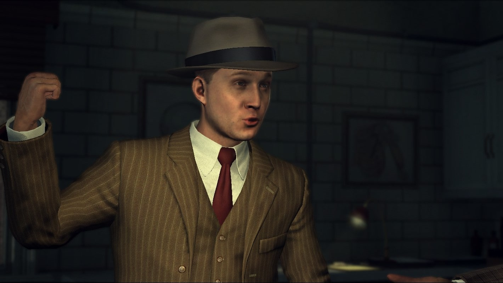
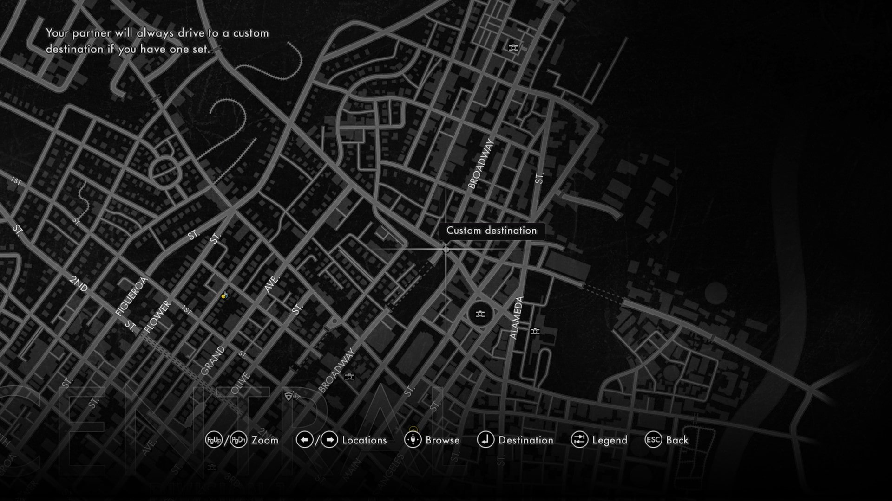
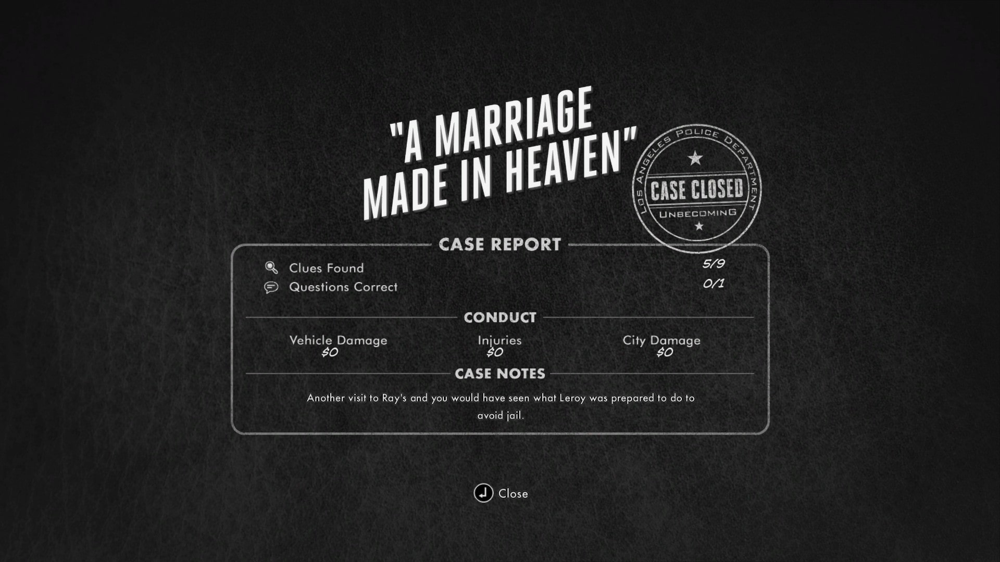

A simple hit and run case in front of a local bar. Seems easy enough for the Traffic Detective and his partner to deduce, but as they uncover more evidence, it reveals that there was something more than just a driver hitting a drunk guy on the street.
Out of the shorter cutscene from last time, go the same way towards the exit and use the same exit strategy to have Bekowsky drive you to Ray’s Café.
Immediately skip the cutscene, and go around the right of the first barrier on the right to skip the dialogue with the patrolman for the moment. Head into the alleyway, and inspect the “steak knife” in the garbage can. The angle for the knife is ↗.
Then head back towards Mal and inspect the victim’s left jacket pocket to check the ID in his wallet.
Putting back the wallet will make you go through two cutscenes. Once done with that, use the patrol car behind you to have Bekowsky drive you to the Pattison residence.
Skip the intro cutscene and walk up to the door. Skip the next cutscene, and walk over to the couch on the left and start spamming the talk button to talk with Mrs. Pattison about her husband’s death.
After Bekowsky says “You’re going to have to run that one by us again, sister,” you can skip the cutscene and start to ask questions.
During any part of the cutscenes or the interrogation, marker over to the Central morgue to skip talking to R&I for messages.
After the interrogation, make Bekowsky drive you to the morgue.
This one is a fast one: go in the morgue and head into the room on the far right. Skip the cutscene, go out of the morgue and to the right and have Bekowsky drive you back to the Pattison Residence.
Make sure to climb over the little wall on the right to gain some extra speed.
Skip the cutscene after going up to the door, and immediately sprint forward out of the cutscene as you are chasing Leroy Sabo.
When you see Leroy Sabo climbing over the porch and fully scale it, that is the fastest point at which you can shoot Leroy Sabo. Shooting Leroy immediately will be faster than trying to skip it by any means.
